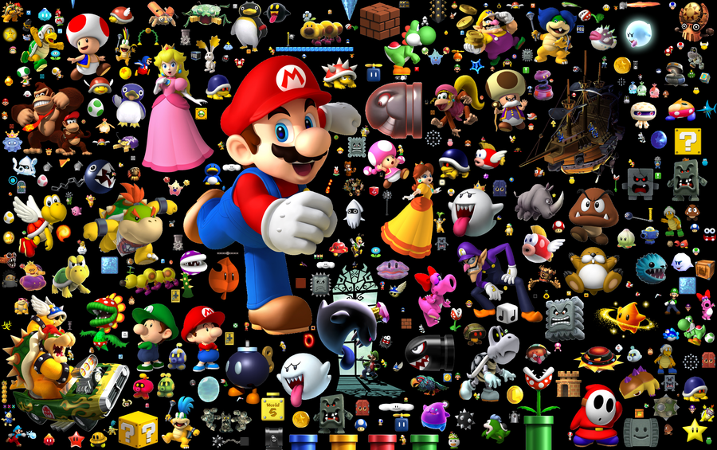

Mario
Mario, the iconic plumber from the Mushroom Kingdom, has been a staple of gaming culture for decades. Since his debut in the arcade classic Donkey Kong, Mario has captured the hearts of millions with his charming personality and adventurous spirit. Join us as we delve into the world of Mario, exploring his evolution, iconic characters, cultural impact, and spin-off adventures.
Mario's Evolution
Mario's evolution spans several decades, beginning with his debut in the 1981 arcade classic Donkey Kong. Since then, Mario has evolved from a simple 2D character to a fully-realized 3D platformer icon. Key milestones include the release of Super Mario Bros in 1985, which revolutionized the platforming genre, and Super Mario 64 in 1996, which introduced 3D gameplay. Innovations like power-ups, level design, and multiplayer modes have kept the series fresh and engaging for fans old and new.
Super Mario Bros. was the fist game in Super Mario franchise. It was a side scrolling traditional mario game released on NES.
Super Mario Bros. 2 is as expected the 2nd game in the Super mario Franchise. it was also a side scrolling game. It also released on NES.
Super Mario Bros. 3 is 3rd Super Mario game developed and published by Nintendo for the NES.
Super Mario World is another great addition to the franchise also published by Nintendo. It was released on SNES.
Super mario 64 is the first ever 3D game in this franchise. It laid foundation to many future 3d Video games. It was released on N64.
Super Mario Sunshine is the second 3D game in the Super Mario series. It was released on the Nintendo Gamecube.
Super Mario galaxy is the third 3D game in the Super Mario series. It was released on the Nintendo Wii in 2007.
Iconic Mario Characters
The Mario universe is populated by a colorful cast of characters, each with their own unique personalities and abilities. Mario and Luigi, the heroic plumbers, lead the charge against the villainous Bowser, king of the Koopas. Princess Peach, Mario's perennial damsel in distress, adds a touch of royalty to the mix. Other notable characters include Yoshi, the friendly dinosaur companion; Toad, the loyal mushroom retainer; and Bowser Jr., Bowser's mischievous son. Together, they form the backbone of the Mario franchise and have become beloved icons in gaming culture.
Mario's Influence on Gaming Culture
Mario's influence on gaming culture cannot be overstated. As one of the most recognizable and beloved characters in video game history, Mario has left an indelible mark on the industry. The success of the Mario franchise has inspired countless imitators and spin-offs, from platformers to racing games to party titles. Mario's iconic status extends beyond gaming, with references and homages appearing in movies, television shows, and even music. Mario's influence can also be seen in technological advancements, with innovations like 3D gaming and motion controls owing a debt to the pioneering spirit of the Mushroom Kingdom.

Mario Spin-off Games
Mario spin-off games encompass a wide variety of genres and gameplay styles, offering something for every type of gamer. The Mario Kart series, for example, brings high-speed racing action with iconic characters and imaginative tracks. Mario Party titles provide fun-filled party experiences with mini-games and multiplayer competitions. Mario sports games, such as Mario Tennis and Mario Golf, combine the thrill of athletic competition with the charm of the Mushroom Kingdom. Additionally, spin-offs like Mario RPGs and Mario vs. Donkey Kong offer unique adventures and puzzle-solving challenges. These spin-offs showcase the versatility and enduring appeal of the Mario franchise beyond traditional platforming adventures.

Top 25 Mario Games
| Name | Date | Genre | Total Sales |
|---|---|---|---|
| Super Mario Bros | 1985 | Platformer | 40.24 Million |
| Mario Kart 8 Deluxe | 2017 | Racing | 43.35 Million |
| Mario Kart Wii | 2008 | Racing | 37.38 Million |
| New Super Mario Bros | 2006 | Platformer | 30.8 Million |
| New Super Mario Bros Wii | 2009 | Platformer | 30.3 Million |
| Mario Kart DS | 2005 | Racing | 23.6 Million |
| Super Mario World | 1990 | Platformer | 20.61 Million |
| Super Mario Bros 3 | 1988 | Platformer | 18 Million |
| Super Mario 64 | 1996 | Platformer | 11.91 Million |
| Super Mario Bros 2 | 1988 | Platformer | 10 Million |
| Super Mario Odyssey | 2017 | Platformer | 19.1 Million |
| Mario Party 8 | 2007 | Party | 9.31 Million |
| Mario & Sonic at the Olympic Games | 2007 | Sports | 8.62 Million |
| Super Mario Land | 1989 | Platformer | 18.14 Million |
| Super Mario Galaxy | 2007 | Platformer | 12.8 Million |
| Super Mario Land 2: 6 Golden Coins | 1992 | Platformer | 11.09 Million |
| Super Mario 3D Land | 2011 | Platformer | 13.41 Million |
| Super Mario Sunshine | 2002 | Platformer | 6.28 Million |
| Super Mario Galaxy 2 | 2010 | Platformer | 7.41 Million |
| Mario Party 9 | 2012 | Party | 5.39 Million |
| New Super Mario Bros 2 | 2012 | Platformer | 13.52 Million |
| Super Mario 3D World | 2013 | Platformer | 12.80 Million |
| Super Mario Maker | 2015 | Platformer | 6.94 Million |
| Super Mario Maker 2 | 2019 | Platformer | 7.15 Million |
| Super Mario All-Stars | 1993 | Compilation | 10.55 Million |